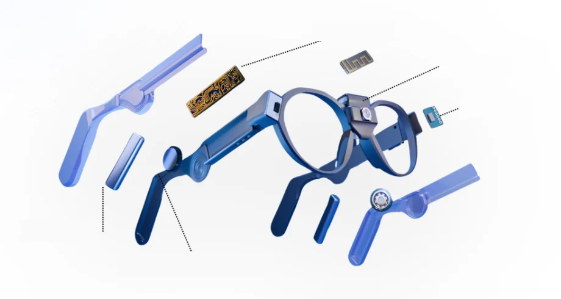

No se trata de ver con los ojos. Se trata de percibir el mundo de otra manera.
Escucha dónde están las cosas.
El audio 3D de UNBLIND hace que cada persona y cada objeto suenen desde donde están: a tu izquierda, al frente o atrás. Y con el LiDAR, el mismo sonido te avisa dónde hay obstáculos.
Ponte audífonos y escucha cómo suena.
Demo de audio 3D de UNBLIND · 15 segundos · se escucha mejor con audífonos
Lo que hace, visto como UNBLIND.
La misma calle, contada de cinco maneras. Toca una o deja que cambie.
También lee textos en voz alta y reconoce productos y códigos. Mientras está en desarrollo, no sustituye al bastón ni al perro guía.
«Calle peatonal, de día. Tres personas caminan hacia ti; al centro, un perro guía.»
IzquierdaAl frenteDerecha
Perro guía · muy cerca
Rostros registrados
Chaleco azul marinoPantalón grisPelaje dorado
Ilustración de cómo describe UNBLIND una escena · foto real
Ligeros, accesibles y con IA por dentro.

Procesador CPU + TPUCámaraLiDARBateríasConducción ósea
Render ilustrativo del sistema
Cámara y LiDAR
La cámara ve lo que tienes enfrente y el LiDAR mide a qué distancia está cada cosa.
IA en los lentes
Un procesador con CPU y TPU para reconocer y describir sin depender siempre de internet.
Conducción ósea
El sonido llega por los huesos de la cabeza y deja libres los oídos para escuchar la calle.
Diseñados con la comunidad
Ligeros, accesibles y probados con personas con discapacidad visual.
Del primer prototipo a la calle.
En 2021 nos preguntamos cómo podría una persona ciega saber qué tiene enfrente. De esa pregunta salió UNBLIND, y de UNBLIND nació Alba: aprendimos a ver con máquinas.
2021
El primer prototipo, en Solve for Tomorrow de Samsung.
2024
Ganadores nacionales de los eAwards México, con pase a la final global.
2025
Con stand propio en Qualinn, en Cali, Colombia.
2026
Premio Estatal de la Juventud · Estado de México
Para Alan Soubran, CEO de Alba, por una trayectoria en la que UNBLIND ha sido central. Modalidad «Innovación que transforma».
«Este dispositivo ayudará a igualar oportunidades.»
Alicia Flores
«Un verdadero avance para la comunidad.»
Omar Ledezma, advisor de UNBLIND
Trabajamos con Biblioteca Vasconcelos, Alcaldía Álvaro Obregón, Ilumina, Ceguera y Baja Visión e Incluye.
Construyámoslo contigo.
Si tienes discapacidad visual, acompañas a alguien o representas a una institución, platícanos qué necesitas. Lo que nos cuentes guía lo que construimos.